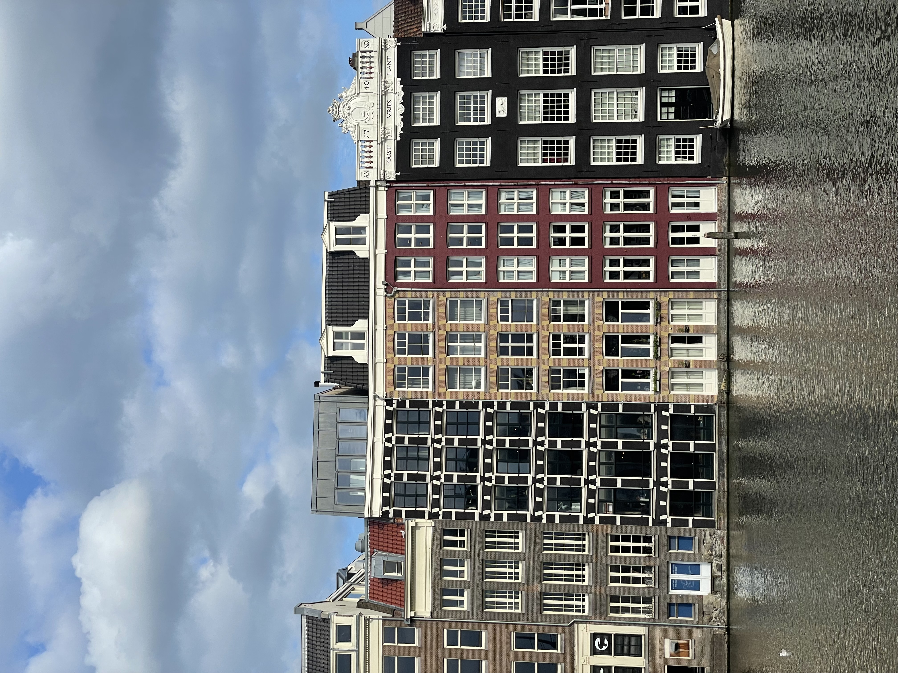
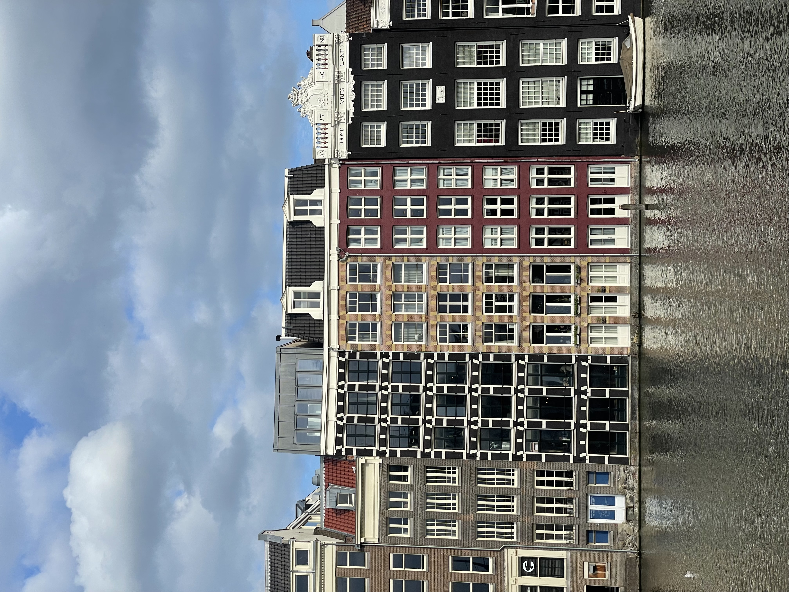

Amsterdam


 



About
I visited Amsterdam in summer of 2023 over the July 4th weekend. It was a another solo trip, part of my benefits as a United Intern. I was in Amsterdam for a total of 4 days, visiting different tourist attractions as well as walking around the city myself. It was the first time I ever stayed in a hostel, Generator Amsterdam. I shared the room with 4 others girls and it was super clean and spacious. Some of the very well known places that I visited included the Rijksmuseum, Anne Frank’s House, De 9 Straatjes, Bloemenmarkt, and the Van Wonderen Stroopwafels. I also had the opportunity to join a canal cruise that took me around the famous canals in Amsterdam and explained the significance of the canals and buildings around Amsterdam. Some thing that I found very interesting about Amsterdam that I didn’t know until I arrived at Amsterdam was that “coffee shops” actually meant shops to buy marijuana and “cafes” were what they called places that sold coffee.
Highlights of the Trip
- I loved walking around the city of Amsterdam, taking in the uniqueness of each street and canal. It is so different from the United States. While it was a city, there were very few cars and a lot of bikes and public transportation used. The streets were often made of bricks which was really special.
- The food at Amsterdam that I tried were many of the staple foods that originated from Amsterdam, and I realized that most of them are sweets. I tried poffertjes (Dutch mini, fluffy pancakes), pannenkoeken (Dutch thin pancakes), stroopwafels (Dutch caramel cookie), and a very famous dutch apple pie.
- I took a day trip to visit Zaanse Schans, a dutch neighborhood on the outskirts of Amsterdam that is known for its traditional windmills. They made clog shoes from scratch and had traditional wooden houses that residents still lived in today.
Top 3 Places I recommend
Hover over the cards to see more details...
Exploring the Canals
Exploring the Canals
Whether it is walking around Amsterdam by yourself or with a tour guide, I think the canals are such an integral part of Amsterdam, that it is a must see. De 9 Straatjes is a neighborhood that is known for the boutiques and small shops that surrounds the canals. If you take a canal cruise, the guides talk about the history of the canals and why the canal was built in the first place.
Van Wonderen Stroopwafels
Van Wonderen Stroopwafels
Van Wonderen is one of the most famous stroopwafel bakeries in all of Amsterdam. The stroopwafels are made as you order, so it is the very fresh. Van Wonderen also adds different toppings for their stroopwafels, making them a bit more unique.
Bloemenmarkt
Bloemenmarkt
This is the city’s flower market on the Singel Canal. Vendors sell tulips, daffodils, and other rare species of flowers to visitors and residents of Amsterdam. There are also many souvenirs that are specific for tourists to bring back to their home country as well.